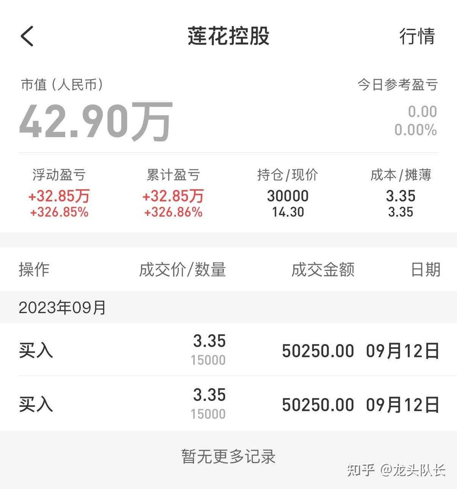
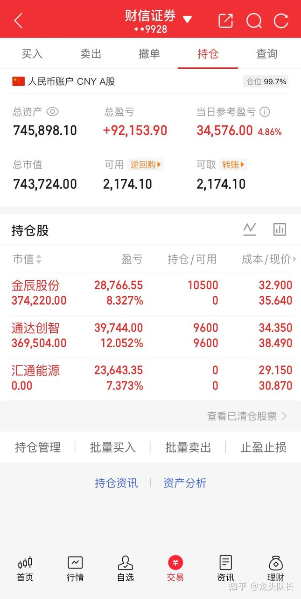

AI 文章核心概述（精简版）
该作者的核心逻辑是典型的‘短线博弈+趋势跟随’策略。其盈利传导链条为：通过识别市场热点板块的‘主升浪’（即资金合力最强的阶段），利用高频交易捕捉个股的爆发期，并在破位时果断止损以控制回撤。这种模式本质上是利用市场情绪的惯性，在资金入场最猛烈时介入，在获利盘开始松动时撤离。作者强调的‘龙头’逻辑，实际上是寻找市场中具备‘高贝塔（Beta）’属性的个股，即在市场上涨时涨幅远超大盘，在下跌时则通过纪律性止损规避风险。
首版奉上，莲花控股3倍已撤！20W重新开始，目标剑指1000个，第20天，新入金辰股份，10月龙头已锁定，欢迎来验！（附9.28日机会）
大家好，我是队长，我又王者归来了！现百万已成，带着326cm的莲花控股从某音完美撤离，2026.9.26日正式入驻知乎。

图表视觉解读
展示了单只个股的高额收益率，这是典型的‘幸存者偏差’展示。新手需注意，这种收益率通常伴随着极高的仓位集中度（全仓一只），一旦判断失误，本金将面临腰斩风险，不具备普适性。
直接说接下来的目标：20万本金，明年国庆前干到1000万。全程实盘公开，交割单每日贴，绝不马后炮。
两个月前，我用5万做到了100万。老粉都知道我的风格：只做波段主升浪注【本质逻辑】指个股在特定题材驱动下，主力资金持续净流入，股价呈现单边上涨的阶段。主力通过连续拉升吸引跟风盘，形成合力。【新手提示】新手极易在主升浪末期追高，需警惕成交量异常放大但股价滞涨的‘出货’信号。，不碰杂毛跟风票注【本质逻辑】指在热点板块中，缺乏核心技术壁垒或实质性业绩支撑，仅靠情绪炒作上涨的个股。一旦板块退潮，此类股票跌幅最深。【新手提示】新手应专注板块龙头，避开跟风票，因为跟风票在市场回调时往往率先崩盘。，趋势启动点介入，破线即走注【本质逻辑】指设定严格的止损位（如跌破关键均线或支撑位），一旦触及立即执行卖出。这是短线交易生存的底线，目的是防止小亏变大亏。【新手提示】新手最大的误区是‘死扛’，将短线操作变成长期被套，必须学会承认判断失误。，绝不留恋。
之前平台限制太多，很多核心买点和止损位没法细说。现在来知乎，所有逻辑讲透，所有买卖点晒全，毫无保留。
熟悉我的朋友应该知道，去年我曾在其他平台持续公开过一段时间的实盘记录，期间也积累了一些朋友的关注。当时设定的阶段性目标，每一步操作都提前做了分享，很庆幸在这个过程中，能帮到一些信任我的朋友。
过往的记录都在原平台可查，真假自辨，无须多言。今天选择在知乎新开一个账号，初心很简单——希望延续这份真诚的分享，让更多有缘的朋友能从中获得一些参考。新朋友不妨先观察一段时间，时间会给出答案。
这段时间陆续收到一些朋友的私信，经过认真考虑，我决定正式入驻知乎，重新开始实盘分享。回想自己从普通散户一路走来的经历，深知独自摸索的不易，也体会过回撤时的煎熬。
正因为我曾经走过那些弯路，所以更想在能力范围内，给还在摸索中的朋友提供一些思路和参考。谈不上指点，更多的是相互陪伴、共同成长。
接下来，我会在每个交易日早上9:40左右分享几只当天关注的标的，盘后也会聊聊每一只背后的逻辑思路。不求所有人都认同，只求对得起自己的记录，对得起信任我的朋友。
前路漫漫，愿意一起同行的朋友，都可以点个赞、关个注，咱们一起抓龙头、吃复利，杀出一条交易逆袭的路！能帮一个是一个，随缘尽力。接下来，就让我们一起携手，一起见证这场从20万迈向1000万的奇迹之旅！
先看看今天实盘情况：
新入：金辰股份
持：通达创智
出：汇通能源

图表视觉解读
展示了高仓位运作（99.7%仓位），说明作者处于极度激进的博弈状态。持仓中包含多只不同行业的个股，显示其通过分散持仓来平衡单一龙头的波动风险，但对市场整体环境的敏感度要求极高。
9月28日关注方向参考：
金辰股份：光伏设备最坏时刻或已过去，主营业务毛利率逆势提升3.41个百分点。钙钛矿蒸镀机、制氢电解槽全自动线均获商业化订单，平台化布局打开新空间。
威星智能：智能水表收入暴增136%，海外市场飙升380%，产品打入拉美、欧洲、中亚。燃气表存量替换基本盘稳固，出口第二曲线正在放量。
贝瑞基因：控股股东质押风险出清，新一届董事会落定，经营连续性获保障。试剂销售占比升至46.8%，医学检测毛利率大幅回升至52%，基本面拐点可期。
上工申贝：境外整合减亏见效，海外毛利率改善。战略转向“技术领先+经营承包”，AI+人形机器人缝制技术研发加码，机制激活打开想象空间。
均胜电子：上半年新获订单449亿，同比增44%。智驾进入规模化量产，能源管理向机器人、AIDC、低空飞行器迁移，第二曲线加速成型。
最后与愿意同行的朋友说几句心里话
开始记录实盘的初衷，其实很简单——想亲自验证一件事：小资金是否真的能通过持续学习和纪律性的执行，慢慢走出一条属于自己的路。这个过程里，没有太多宏大的叙事，更多的是日复一日的坚持和反思。
交易中，回撤、踏空、卖飞都是再正常不过的事，没有人能永远踩准节奏。我能做的，是把每一笔操作、每一次判断——无论对错，无论纠结与否——都真实地记录下来。不包装，也不回避。
无论你是已经在市场中摸索了一些年头、但尚未形成自己节奏的朋友，还是刚入市不久、还处于学习阶段的新手，又或者是单纯想找个地方一起复盘交流，都欢迎在这里驻足。这里没有捷径，也没有“秘籍”，只有一份真实的记录和交易思路的分享。如果能在某个瞬间给你带来一点启发，那就很值得了。
如果觉得这种方式对你有帮助，都可以点个赞、关个注，咱们一起抓龙头、吃复利，杀出一条交易逆袭的路！
若点赞数超过50，周一开盘前我会整理一份当日的关注方向，作为给首批支持的朋友们的一点回馈。投资的路很长，希望我们都能在起伏中保持平和，在学习中慢慢进步。
免责声明：以上内容仅为个人交易记录和思考，不构成投资建议，也不作为买卖依据。市场充满不确定性，每一次决策都请结合自身情况独立判断，盈亏自负。
全文总结与新手避坑指南
全文逻辑总结：作者通过高频短线交易和极高的仓位管理，试图在短时间内实现资产的指数级增长。其核心在于‘纪律性’——即对买卖点的极致执行。新手避坑指南：1. 不要盲目模仿‘翻倍’神话，高收益必然对应高风险，实盘记录往往只展示成功的一面。2. 警惕‘龙头’陷阱，很多所谓的龙头在散户入场时已是强弩之末。3. 必须建立自己的交易系统，而不是依赖博主的推荐，因为博主买入时机与你看到文章时存在严重的时间滞后，极易成为接盘侠。